ΤΕΣΤ Τεχνολογία Λογισμικού
ΤΕΧΝΟΛΟΓΙΑ ΛΟΓΙΣΜΙΚΟΥ
Διαγράμματα UML και κυκλωματική πολυπλοκότητα
1. Με βάση το ακόλουθο διάγραμμα κλάσεων της UML, πόσες θα είναι οι ιδιότητες (attributes) τελικά (στον παραγόμενο πηγαίο κώδικα) για την κλάση "Υπάλληλος";
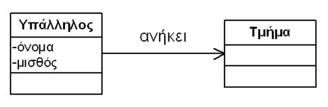
Καμία
Δύο
Τρεις
Τέσσερις
2. Από το ακόλουθο τμήμα ενός διαγράμματος ακολουθίας (Sequence Diagram) συμπεραίνουμε ότι:
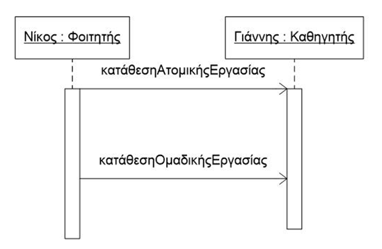
Η κατάθεση ΟμαδικήςΕργασίας γίνεται παράλληλα με την κατάθεση ΑτομικήςΕργασίας
Οι κλάσεις Φοιτητής και Καθηγητής έχουν κάποιου είδους συσχέτιση μεταξύ τους
Η κλάση Φοιτητής έχει μια λειτουργία 'κατάθεσηΑτομικήςΕργασίας'
Ο Γιαννής είναι αντικείμενο της κλάσης Φοιτητής
3. Μια αντικειμενοστρεφής μεθοδολογία ανάλυσης και σχεδίασης (όπως η μεθοδολογία RUP):
Επιπτρέπει την αυτόματη παραγωγή κώδικα από τις απαιτήσεις του συστήματος
Εξασφαλίζει ότι δε θα εισαχθούν λάθη στο λογισμικό
Εξασφαλίζει τη μετατροπή διαδικασιακού κώδικα σε αντικειμενοστρεφή
Υποβοηθά τη μετάβαση από τις απαιτήσεις του συστήματος στην τελική υλοποίησή του
4. Η κυκλωματική πολυπλοκότητα (McCabe) βασίζεται στην αντίληψη ότι:
Όσο αυξάνει ο αριθμός των συναρτήσεων τόσο αυξάνει η πολυπλοκότητα
Όσο αυξάνει ο αριθμός των κλάσεων τόσο αυξάνει η πολυπλοκότητα
Όσο αυξάνει ο αριθμός των ελέγχων τόσο αυξάνει η πολυπλοκότητα
Όσο αυξάνει ο αριθμός των εντολών τόσο αυξάνει η πολυπλοκότητα
5. Ποιό από τα διαγράμματα κλάσεων UML που δίνονται στη συνέχεια αποτυπώνει ορθότερα τον κάτωθι κώδικα Java
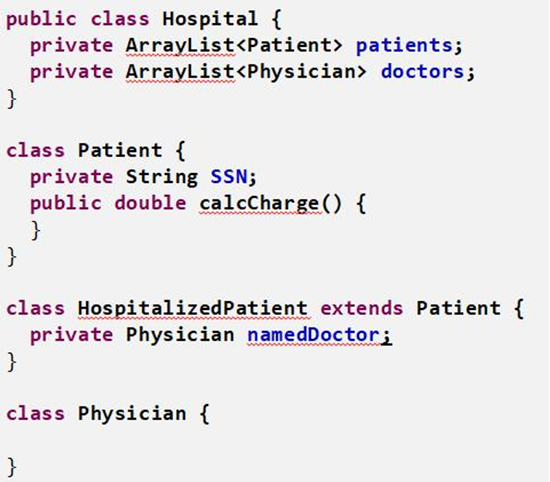
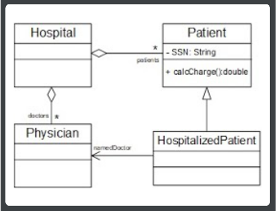 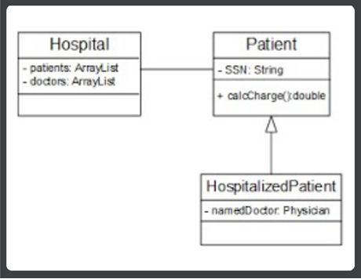
(i)
(ii)
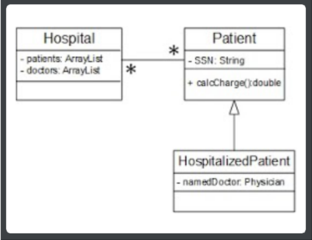 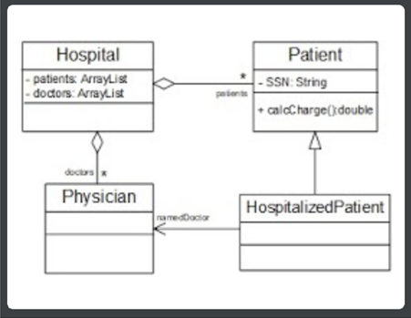
(iii)
(iv)
6. Ποιά είναι η τιμή της κυκλωματικής πολυπλοκότητας για το τμήμα κώδικα που ακολουθεί;
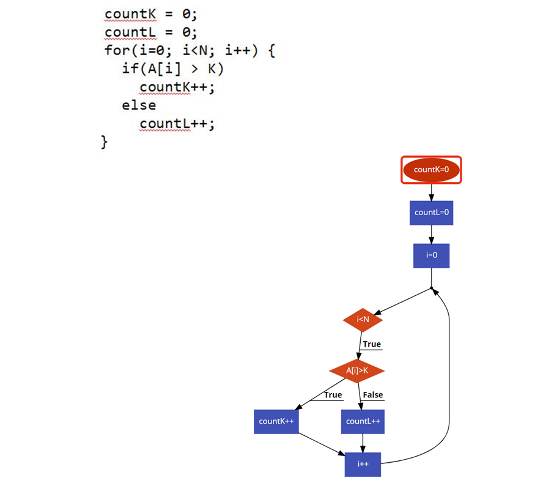
1
2
3
4
7. Η ανάπτυξη έργων λογισμικού:
Διευκολύνεται από το γεγονός ότι στα προϊόντα λογισμικού η ποιότητα μπορεί να οριστεί πολύ εύκολα
Στηρίζεται σε μεγαλύτερο βαθμό σε τεχνικούς πόρους (μηχανήματα) παρά σε ανθρώπινους πόρους
Δεν απαιτεί διαχείριση των σχετικών έργων (project management)
Διαφέρει σε αρκετές πτυχές από άλλες τεχνικές δραστηριότητες
8. Η κρίση λογισμικού αφορά:
Την έλλειψη αρκετών γλώσσών προγραμματισμού
Την ανεπάρκεια προγραμματιστών
Την υπέρβαση χρόνου και προϋπολογισμού σε πολλά μεγάλα έργα λογισμικού
Τα φιλοσοφικά ζητήματα από τη χρήση λογισμικού
9. Από το τμήμα του διαγράμματος περιπτώσεων χρήσης που δίνεται παρακάτω, προκύπτει ότι:
Οποιοσδήποτε χρήστης μπορεί να προσθέσει ένα νέο πρόγραμμα
Ένας εγγεγραμμένος χρήστης μπορεί να τροποποιήσει ένα πρόγραμμα
Ο εγγεγραμμένος χρήστης μπορεί να καλέσει έναν απλό χρήστη
Ο απλός χρήστης αποτελεί ειδικότερη κατηγορία εγγεγραμμένου χρήστη
10. Στο διάγραμμα ακολουθίας (ενός υποθετικού συστήματος) που δίνεται παρακάτω, ποιό διάγραμμα κλάσεων αντιστοιχεί;
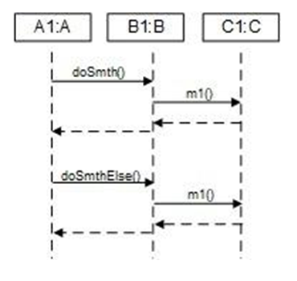
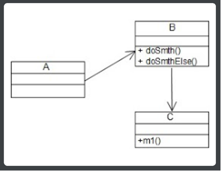 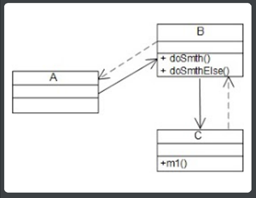
(i)
(ii)
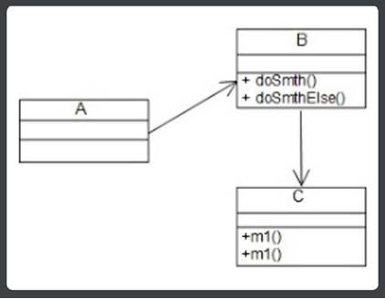 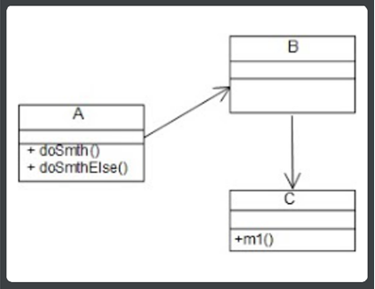
(iii)
(iv)
11. Δίνεται η κάτωθι περιγραφή απαιτήσεων υψηλού επιπέδου για ένα υποθετικό σύστημα ταξιδιωτικού γραφείου. Ποιό από τα παρακάτω διαγράμματα περιπτώσεων χρήσης είναι το σωστό;
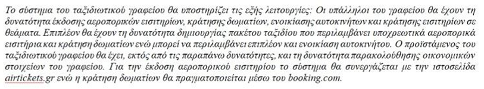
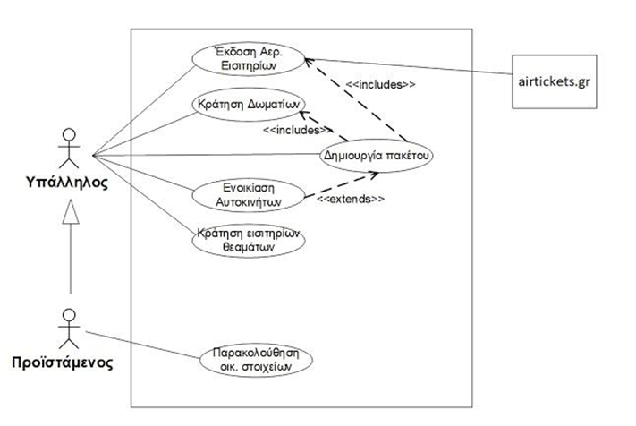 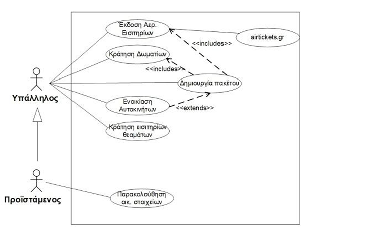
(i)
(ii)
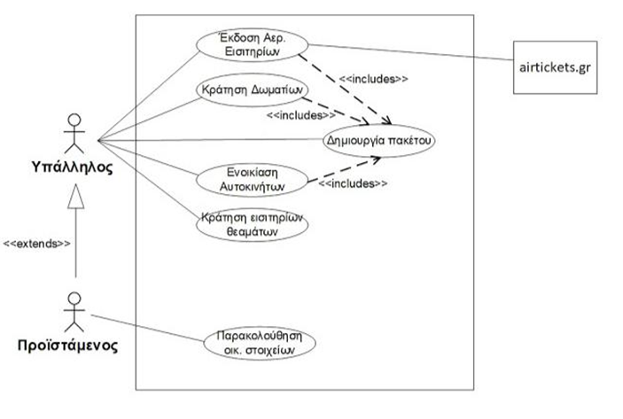 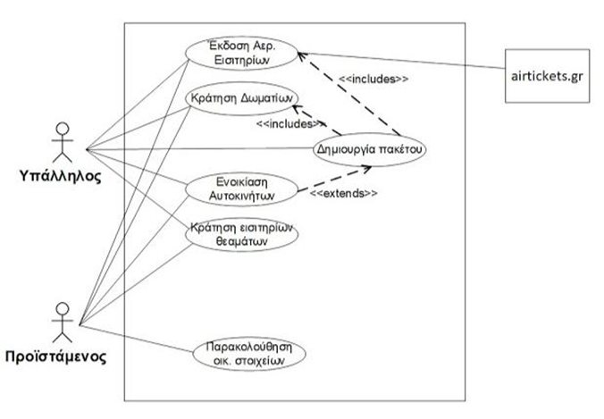
(iii)
(iv)
Επαναφόρτωση
Αποτέλεσμα =